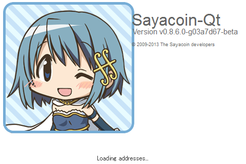

Sayacoinについて
Sayacoin（さやコイン）はBitcoin0.8.6ベースの仮想通貨です。
万が一さやかさんが仮想通貨のスタンダードになったら面白いなと思って作りました。
さやかさんファンは集めてはいかがでしょうか。
Sayacoinの仕様
アルゴリズムはBitcoinと同じくSHA-256です。
コイン最大数 2100万枚
アルゴリズム SHA-256
ブロック時間 5分
Difficulty再設定間隔 12ブロック
ブロック報酬半減 210000ブロック
最初の報酬 50SYC
ダウンロード
・ Windows版(2014/03/20のバージョン)
https://github.com/umiyuki/sayacoin/releases/download/Saya0.8.6.3/sayacoin-qt0_8_6_3.exe
・ Linux版
どなたかご協力お願いします…
・ Mac版
どなたかご協力お願いします…
更新履歴
・ 2014/03/20
ver0.8.6.3公開
→UPnP機能をデフォルトでONにしました。
→PUBKEY_ADDRESSを変更しました。これにより受け取りアドレスの最初の文字が"1"から"S"に変わります。
・ 2014/03/19
ver0.8.6.2公開
→時々Bitcoinネットワークに繋がってしまうバグを修正。
・ 2014/03/19
ver0.8.6.1公開
→Bitcoinの初期シードに接続していたのを、余計なシードに接続しないように変更
→チェックポイントの更新
・ 2014/03/18
ver0.8.6公開
はじめにする事
上のダウンロードの項目からクライアント（exeファイル)をダウンロードしてください。これがあなたのSayacoinウォレット（財布）となります。
-
ダウンロードしたクライアントを実行するとSayacoinウォレットが起動します。
このウォレットソフトはSayacoinの通帳です。その他にも様々な機能が付いており、このソフトからSayacoinの採掘を行う事も出来ます。
-
クライアントを一度閉じてください。特定のディレクトリに設定フォルダが生成されているはずですので開いてください。
Vista、7の場合は→C:\Users\username\AppData\Roaming\Sayacoin\ XPの場合は→C:\Documents and Settings\username\Application Data\Sayacoin\
下に書いてある設定例を参考にして、このSayacoinフォルダの中にsayacoin.confというファイルを作ってください。（新規テキストファイルを作って設定内容を記述してからsayacoin.confという名前で保存）
設定例以外のパラメータ設定に関してはBitcoinと同じなのでそちらの解説ページ( https://en.bitcoin.it/wiki/Running_Bitcoin#Command-line_arguments )などを参考にしてください。
-
再度クライアントを起動してください。これで下に書いた採掘手順でSayacoinを採掘できるようになります。
採掘にはＣＰＵを使用しますので採掘中はＣＰＵの使用率が上がります。採掘に成功すると採掘したコインの枚数が画面に表示されます。
-
基本的な使い方は以上ですが、知っておくと便利な事は他にも色々あります。
例えばウォレット上で採掘するよりＧＰＵを活用できる専用のマイニングソフトを使用したほうが高速に採掘できたりします。
ソフトの詳しい使い方についてはBitcoinのウォレットと同様なのでそちらの解説サイトを参照してください。
それでは楽しいSayacoinライフを！
採掘手順
Help > Debug window > Consoleタブ でConsoleを開いてsetgenerate trueと打ち込んでEnterキーを押すと採掘を開始します。
setgenerate falseで採掘を停止します。 setgenerate true 1でプロセス数を1に制限します。(2にすると2プロセスに)
Consoleで使用できるその他のコマンドについてはこちら( https://en.bitcoin.it/wiki/Original_Bitcoin_client/API_calls_list#Full_list )を参照してください。
sayacoin.conf設定例
rpcuser=username(任意)
rpcpassword=password(任意)
server=1
addnode=183.177.196.139
addnode=36.55.238.28
デフォルトで採掘する場合はgen=1を付けてください。genproclimitでプロセス数を変更できます。 gen=1 genproclimit=2
まだノード数が少ないので初期ノードにとりあえず開発者のアドレスの追加を推奨（繋がらない場合もあります）。
addnode=183.177.196.139
ohacさんが作ってくださったSayacoin対応のWebウォレットのIPアドレス（36.55.238.28）もaddnodeすると繋がりやすくなるそうです。
addnode=36.55.238.28
Sayacoin対応サービス
・ohacさんが仮想通貨WebウォレットにSayacoinを対応してくださいました。 http://www.sighash.info/
プレマインについて
テスト及びブロックチェインの確定のために公開前に25ブロック(1250SYC)ほど採掘してます。